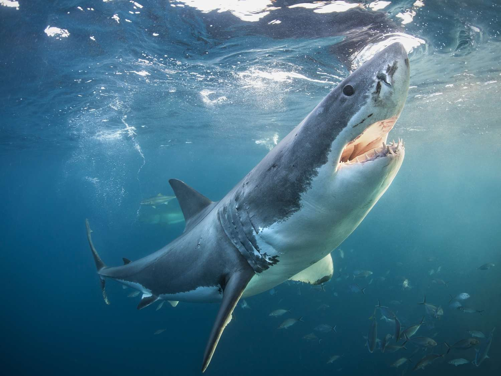
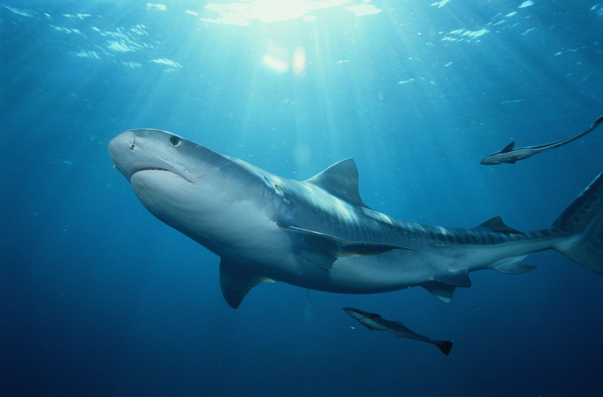
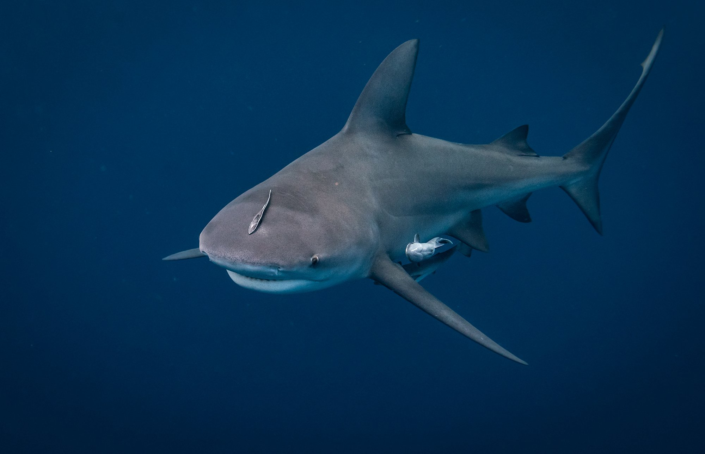
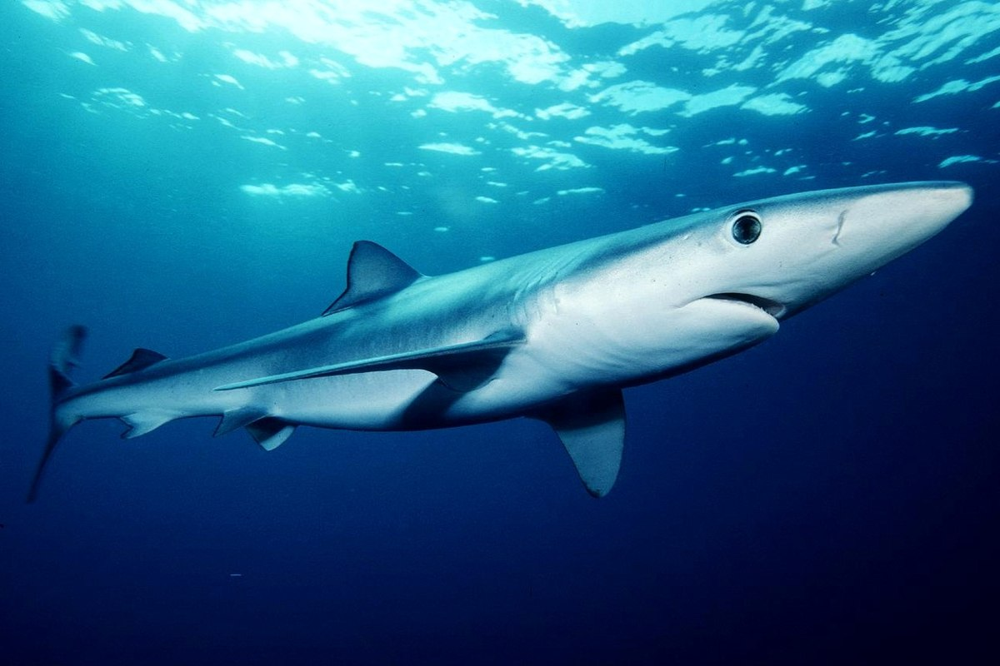
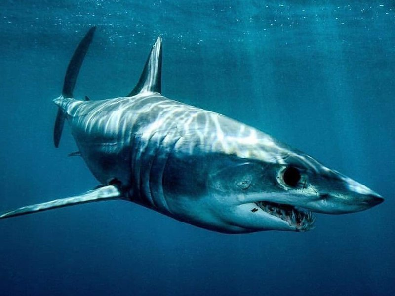
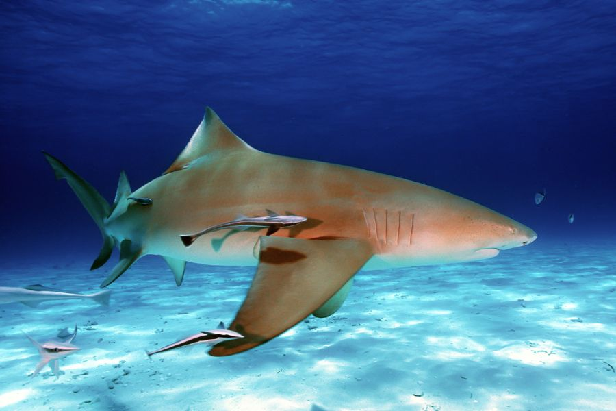

Haizivs tiek klasificēta kā "hondrihtija" (skrimšļa zivs ), un tajā ir vairāk nekā 400 sugu. Lielākā daļa no tiem sasniedz tikai aptuveni 1,5 metru garumu; tikai 10 sugas izaug vairāk par 4,5 metriem. Garākās haizivis ir gandrīz 20 metrus garas. Baigā lielā baltā haizivs var izaugt līdz aptuveni 6 metriem, lai gan retos gadījumos sasniedz 8 metrus. Apmēram 30% no visām haizivīm dēj olas.
Haizivis bieži tiek uzskatītas par dzīvnieku, no kā jābaidās, bet haizivis ir bailīgi dzīvnieki; viņi neuzbrūk bez iemesla vai provokācijas.
Potenciāli bīstamās haizivis
Lielā baltā haizivs:
Balto haizivju populācijas bieži ir centrētas ļoti produktīvos mērenos piekrastes ūdeņos (tas ir, ūdeņos, ko raksturo zivju un jūras zīdītāju pārpilnība), piemēram, pie ASV ziemeļaustrumu un rietumu krastiem, Čīlē, Japānas ziemeļos, Austrālijas dienvidos, Jaunzēlandē, Āfrikas dienvidos un Vidusjūrā. Viņi ir lieliski mednieki, kas bruņoti ar spēcīgiem muskuļiem, labu redzi un labu ožu. Turklāt viņu masīvie žokļi ir bruņoti ar lieliem, asiem, smailiem zobiem. Katrs zobs ir paredzēts miesas griešanai un var viegli caurdurt un salauzt kaulu. Jaundzimušās baltās haizivis barojas ar zivīm un citām haizivīm. Sasniedzot pilngadību, viņu upuri ir jūras bruņurupuči, roņi, jūras lauvas, cūkdelfīni, delfīni un mazi vaļi.

Tīģerhaizivs:
Tīģerhaizivis ir pazīstamas kā agresīvas. Šiem lielajiem plēsējiem ir pienācīgi nopelnīta cilvēkēdāju reputācija. Uzbrūkot cilvēkiem, viņi ir otrajā vietā tikai aiz lielajām baltajām haizivīm. Tīģerhaizivis ir nosauktas tumšo, vertikālo svītru dēļ, kas galvenokārt sastopamas uz mazuļiem. Kad šīs haizivis nobriest, šīs līnijas sāk izbalēt un gandrīz pazūd. Noķerto tīģerhaizivju kuņģa saturā ir bijušas dzeloņrajas, jūras čūskas, roņi, putni, kalmāri un pat numura zīmes un vecas riepas. Tīģerhaizivis ir izplatītas tropu un subtropu ūdeņos visā pasaulē.

Vērša haizivs:
Vērša haizivis ir agresīvas, izplatītas un parasti dzīvo netālu no apgabaliem ar lielu iedzīvotāju skaitu, piemēram, tropu piekrastē. Viņas netraucē saldūdens, un viņas pat dodas tālu iekšzemē caur upēm un pietekām. Daudzi eksperti vēršu haizivis uzskata par visbīstamākajām haizivīm pasaulē. Vēsturiski viņām pievienojas viņu slavenākie brālēni, lielās baltās haizivis un tīģerhaizivis, kā trīs sugas, kam ir lielākā iespēja uzbrukt cilvēkiem.

Vislabāk zināmās haizivis
Zilā haizivs:
Zilā haizivs ir salīdzinoši neagresīva, taču ir ļoti zinātkāra un tuvosies ūdenslīdējiem un zemūdens medniekiem, it īpaši, ja ir pieejama barība. Zilā haizivs sastopama tropiskajos un mērenajos okeānos. Zivis, kalmāri un vēžveidīgie veido tās uztura galvenās sastāvdaļas, taču zilā haizivs medī arī jūras putnus, un ir novērots, kā tā ēd mirušu vaļu līķus. Zilās haizivis ir nosauktas to muguras pārsteidzošās zilās krāsas dēļ, padarot tās par raksturīgākajām no rekviēmhaizivīm.

Īsspuru mako haizivs:
Īsspuru mako (Isurus oxyrinchus) ir sastopams visās tropiskajās un mērenajās jūrās, un garspuru mako (I. paucus) ir izkaisītas visā pasaulē tropu jūrās. Mako haizivis medī tādas zivis kā siļķes, makreles un zobenzivis, kā arī mazos vaļveidīgos. Ir zināms, ka tie galvenokārt ēd kaulainas zivis (tostarp salīdzinoši lielas tunzivis) un kalmārus, bet ēd arī citas haizivis, mazus jūras zīdītājus, jūras bruņurupučus un pat mirušas organiskās vielas. Īsspuru mako atrodas pelaģiskā barības tīkla augšdaļā, un pieaugušajiem nav zināmu dabisko plēsēju. Nepilngadīgos, iespējams, ēd citas haizivis un, iespējams, pieauguši kanibālisti.

Citronhaizivs:
Citronhaizivis ir vidēji no 8 līdz 10 pēdām garas, kad tās ir pieaugušas, taču parasti tās netiek uzskatītas par draudu cilvēkiem. Citronhaizivs savu nosaukumu ieguvusi tās gaiši dzeltenbrūnās krāsas dēļ. Citronhaizivs apdzīvo piekrastes ūdeņus peldētāju, sērfotāju un nirēju tiešā tuvumā. Citronhaizivis apdzīvo piekrastes piekrastes ūdeņus no Ņūdžersijas (ASV) līdz Brazīlijas dienvidiem, Meksikas līcī un Karību jūras reģionā Atlantijas okeāna ziemeļrietumos un gar Senegālu un Āfrikas Ziloņkaula krastu Atlantijas okeāna austrumu daļā. Ēd diētu, kas galvenokārt sastāv no asakainām zivīm un vēžveidīgajiem.

Āmurgalva:
Āmurhaizivis ir plaši izplatītas tropiskajos un mērenajos jūras ūdeņos pie krastiem un virs kontinentālajiem šelfiem. Tie var migrēt sezonāli, ziemā virzoties uz ekvatoru un vasarā virzienā uz polu. Āmurhaizivis medī plašu zivju, galvkāju un vēžveidīgo klāstu, taču konkrēts upuris dažādām sugām ir atšķirīgs. Mazajām haizivīm ir biezāki, saplacināti smalcināšanas zobi, un tās bieži medī krabjus, garneles un smiltīs apraktas zivis. Viena galviņhaizivs suga S. tiburo ir visēdāja, jo ēd jūraszāli. Turpretim lielākām āmura haizivīm ir apjomīgi asmeņiem līdzīgi zobi, un tās bieži medī lielākas zivis, kalmārus, mazas haizivis un dzeloņrajas.
Vaļhaizivs:
Lielākā haizivs un patiešām lielākā no visām mūsdienās dzīvajām zivīm. Viņi barojas ar planktonu un ceļo lielus attālumus, lai atrastu pietiekami daudz pārtikas, lai uzturētu savu milzīgo izmēru un vairotos. Vaļu haizivis ir sastopamas visos pasaules tropiskajos okeānos. To baltā plankumainā krāsa padara šos maigos milžus viegli atšķiramus, un tos iecienījuši snorkelētāji un ūdenslīdēji vietās, kur tie pulcējas pie krasta. Vaļu haizivs nosaukums cēlies no tā, ka šie dzīvnieki ir tik lieli (tik lieli kā vaļi) un, ka tie filtrē barību.